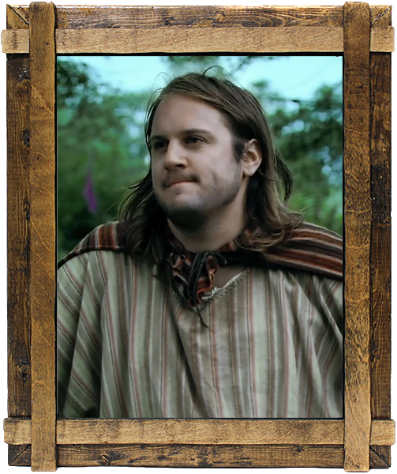
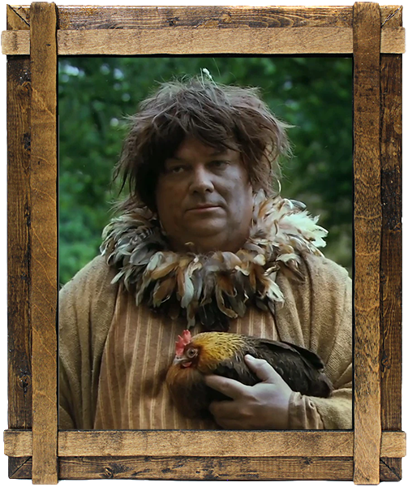

Perceval (Fondateur)
- Un oncle de Perceval est mort car il s'est tiré une flèche sur lui sans faire exprès avec unarc.
- Perceval s'est souvent emmêlé les pinceaux sur son propre surnom, ayant confondue "Perceval le Gallois" avec "Provençal le Gaulois".
- Cette erreur lui a ironiquement permis de devenir une légende, Provençal le Gaulois a en effet une excellente réputation sur ses fait d'armes.
- Dans la légende arthurienne, c'est lui qui trouvera le Graal. Dans d'autres versions, il trouve l'emplacement du Graal, mais il échoue au test (qui sera réussi par Galaad). Cela peut expliquer les échecs à répétition du personnage de Perceval dans la série.
- Alexandre Astier a toujours déclarer ne pas écrire Perceval comme un idiot, mais comme un enfant.

Karadoc (Fondateur)
- Il a "pissé au lit jusqu'à 17 ans", un secret qu'il n'a confié qu'à Perceval et que celui-ci répète par inadvertance au Tavernier.
- Alexandre Astier a blagué en indiquant écrire ce personnage « comme un gros porc » et avoir utilisé Carlos comme inspiration.

Kadoc (Colonel à titre aromatique)
- Alexandre Astier a répondu dans une interview à la question « Elle est où la poulette ? », réplique
récurrente de Kadoc : « Je pense pas que ça soit [Kadoc] qui pose la question, je pense qu'il répète
une question qu'on lui a posé à lui. Comme s’il avait fait une connerie avec cette poulette et qu'on
lui dise, à longueur de journée, pendant des mois : « Elle est où la poulette ? Elle est où la
poulette ? » et en fait lui il répète ça comme un truc... Il pose la question alors qu'il y a que
lui qui le sait, je crois. » [6] Dans une autre, il a déclaré : « Tout ce que je sais, c'est qu'il a
de mauvais réflexes avec les animaux, Kadoc. Il a un peu tendance à considérer qu'il peut foutre des
coups de pieds dedans. Donc il vaut mieux pas trop s'intéresser à où est la poulette. Je pense qu'il
y a une mauvaise nouvelle à la clé ».
- Alexandre Astier a aussi indiqué avoir écrit Kadoc en contraste par rapport à Karadoc, et qu'après
avoir envisagé de faire de Kadoc un frère plus intelligent, il a préféré faire en sorte que Karadoc
soit « l'intelligent de la famille », et qu'il a donc été obligé de devoir en faire un homme avec un
QI très bas.

Merlin (Enchanteur officiel)
- Le 9e titre de la bande originale de Kaamelott - Premier Volet s'intitule « Merlin le Cartographe ».
- Dans Kaamelott - Premier Volet, la cartographie des souterrains des Semi-Croustillants est dessinée sur la cape de Merlin.
- Dans les écrits du père Blaise (le sanglier de Cornouaille) , son surnom est "Coco l'Asticot" ( bien que se soit due à une vengeance d'Arthur).
- Merlin a 883 ans en raison de son statut de demi-démon (Merlin l'archaïque).
- Selon le calendrier démonique, il aura bientôt 7 ans.
- Bien qu'il soit très proche des animaux ( en particulier des loup) et comprend leur langage, il n'aime pas les chevaux ( allez savoir pourquoi.)

Le Tavernier (Propriétaire de la taverne)
- D'après le Livre VI, il a hérité de la taverne par son père.

Ào Sï Kä (Assassin)
- Son nom est orthographié Ào Sï Kä dans les scripts publiés mais Ào Sï Ka dans les crédits des génériques.
Brise-Bûche (Membre)
- Il est crédité dans le Livre VI en tant que « le prisonnier », ne commençant son activité de Brise-Bûche que dans le Livre V.
Mehben (Fille de Karadoc et Mevanwi)
Meghan (Fille de Karadoc et Mevanwi)
Petrok (Fils de Roparzh et mari de Mehben)
- Il considère Perceval et Karadoc comme des héros.
Gareth d'Orcanie (Fils du roi Loth et frère de Gauvain)
- Il est le frère de Gauvain mais n'est pas mentionné lors des précédent médias.